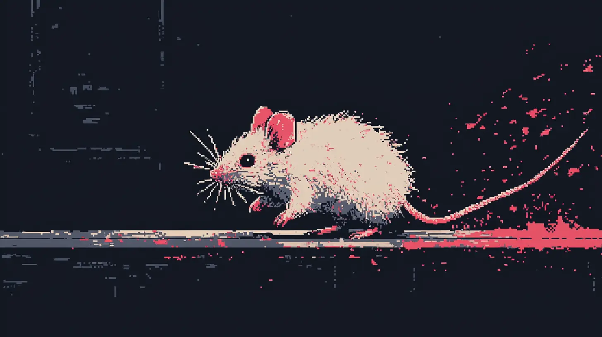

<article class="max-w-4xl mx-auto p-8 bg-black text-white">
  <h1 class="text-4xl font-bold text-center mb-8 title_hero">
    Corri, stupido topo.
  </h1>

  <p class="text-base md:text-lg mb-4">
    "Essere arrivato ad un altro giovedì mi disgusta" disse Alexei al suo
    commensale. "L'euforia del fine settimana mi nausea. Come quella stronzata
    che diceva Dostoevskij." Si frugò nel taschino della camicia e tirò fuori un
    pezzetto di carta quadrettato con su scritto a lapis:
  </p>
  <p class="quote lg:max-w-[50%]">
    Ecco, vedete: se invece di un palazzo sarà un pollaio e pioverà, io, forse,
    m'infilerò nel pollaio per non bagnarmi, eppure non prenderò il pollaio per
    un palazzo per gratitudine, solo perché mi ha protetto dalla pioggia. Voi
    ridete, dite perfino che in questo caso un pollaio e una reggia fan lo
    stesso. Sì, rispondo io, se dovessimo vivere solo per non bagnarci
  </p>
  <p class="text-base md:text-lg mb-4">
    Peter lesse il foglietto usurato, poi alzò lo sguardo verso Alexei. "Da
    quanto tempo hai questo pezzo di carta in tasca?" chiese. "Il fine settimana
    è un pollaio che ci para dalla pioggia della vita, Peter. E noi viviamo per
    non bagnarci. Siamo topi ciechi che corrono su una ruota pensando di essere
    in una prateria." "Io non sono uno topo del cazzo." "Tu sei uno
    <i>stupido</i> topo del cazzo, come me e come tutti gli altri. Ognuno sulla
    sua sudicia rotellina, ognuno con la sua sudicia ruota. E corriamo,
    corriamo, corriamo..." Peter fece una smorfia e alzò gli occhi al cielo:
    "Non ho voglia oggi, Alexei. Non ho voglia di sentire le tue stronzate."
    Prese il foglietto con due dita e agitandolo a ritmo delle sue parole disse:
    "Ma poi mi spieghi perchè giri con questo coso di Dostoskij in tasca?"
    "Dostoevskij, Peter" lo corresse subito Alexei. "Ok come ti pare," riprese
    Peter, "ma ti sembra normale, siamo a pranzo. E te ne esci con sta roba."
    Alexei strappo il foglietto da le dita secche di Peter e se lo rimise in
    tasca, fissandolo negli occhi per tutta la durata dell'operazione. "L'ho
    ritrovato in casa" rispose finalmente "tra i vecchi appunti. Di quando
    studiavo." Tirò un sorso dal suo bicchiere d'acqua e si schiarì la voce: "Mi
    ha fatto riflettere, Peter. Mi ha fatto riflettere molto." Peter sospirò
    profondamente: "Quindi io stamattina sono un cazzo di topo cieco del cazzo
    perchè te sei andato a frugare tra i tuoi vecchi appunti?" "Beh Peter, dimmi
    che non è vero eh?! Dimmi che non è vero che è tutto un merda, che oggi è di
    nuovo giovedì e che domani è venerdì e che aspettiamo avidamente sabato e
    domenica. Dimmi che non è vero che siamo topi."
  </p>
</article>
